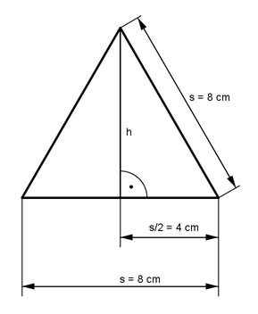

Pythagoras Aufgabe 6 Ein gleichseitiges Dreieck hat eine Seitenlänge s von 8 cm. Wie groß ist seine Höhe h in cm?  s s s2 = h2 + (---)2 - (---)2 2 2 s h2 = s2 - (---)2 2 h2 = 82 cm2 - 42 cm2 = 48 cm2 |√ h = 40cm2 h = 6,9 cm
Pythagoras Aufgabe 6 Ein gleichseitiges Dreieck hat eine Seitenlänge s von 8 cm. Wie groß ist seine Höhe h in cm?
